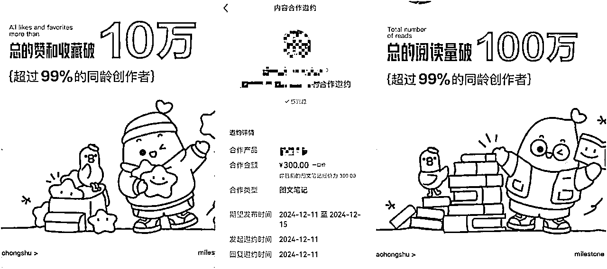
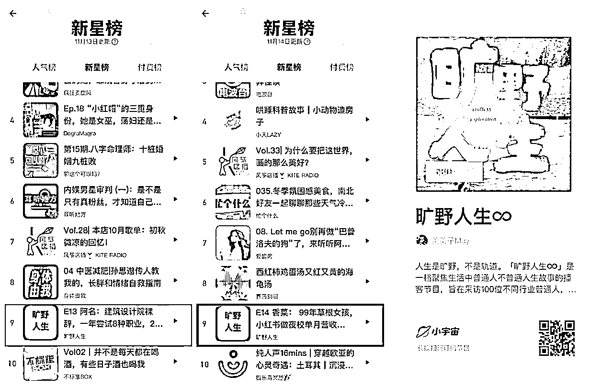
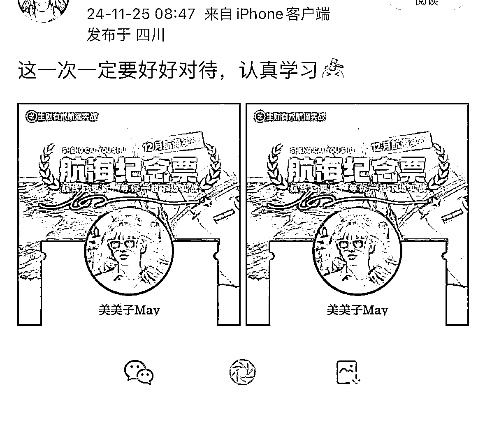
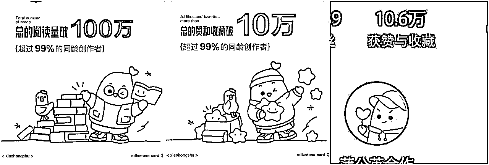
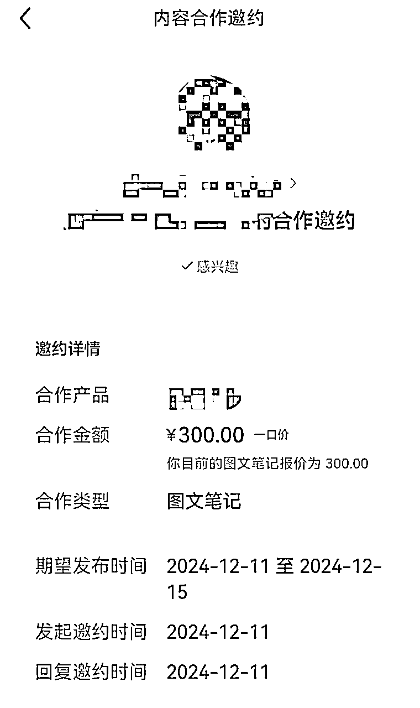
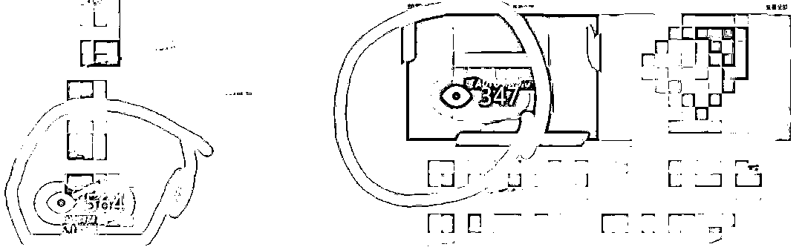
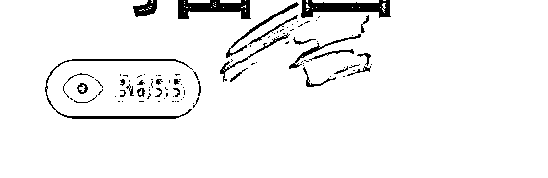
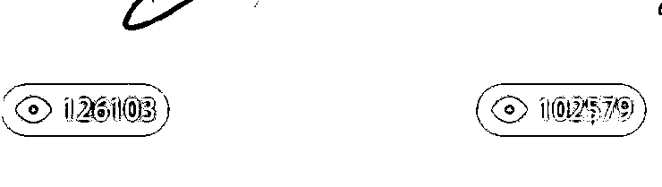

来源：https://ifgkbusm0u.feishu.cn/docx/LtiCd1S6Foe1DSx0Fjzc2KswnVe
大家好，我是美美子。今年三月从国有银行离职，目前是自由职业。目前一半在做保险经纪人，一半在做自媒体，主要是播客和xhs。
现阶段参加12月小红书航海，半个月实现账号粉丝量近1.5k，总阅读量破100w，赞藏破10w。总共发的笔记数200＋，其中爆款有30＋，单篇最高阅读量12w＋。开通蒲公英商单，并且接到第一单商单。

我的播客节目是《旷野人生∞》，三个半月做到小宇宙订阅近6k，有两期节目上过新星榜。

我是今年一月份加入生财的，之前一直都是潜水状态，参加过两次航海，也没怎么认真做。这一次参加了小红书商单的航海，报名之前我就问自己：
我是真的想做出成绩，还是想拿个体验券凑热闹？
当时报名后，我用报名的截图发了个仅自己可见的动态：
这一次一定要好好对待，认真学习。

航海过半，很幸运地在小红书上取得了一些小成绩，也很高兴能有机会给圈友们分享~
报名航海后，我做了两个小红书号。一个是之前就有的号，职场类，之前更新也很佛系，目前2k＋粉。另一个是新号，主要做播客类相关内容的分享，也是本次航海中主要在做的号。
做这个号的原因也是源于，我本身在做的播客。因为我想把播客《旷野人生∞》做好，所以就延伸在xhs做相关的分享。
我目前的账号粉丝量近1.5k，总阅读量破100w，赞藏破10w。总共发的笔记数200＋，其中爆款有30＋，单篇最高阅读量12w＋。
开通蒲公英商单，并且接到第一单商单。


开通账号后，不知道发啥内容，我就截了个自己的播客清单图，配的标题是一个问题。毫无意外，并没有啥大的反馈，浏览量到现在都只有217，有2个赞，但有10个左右评论还挺惊讶的。
初步的尝试让我有两点思考和收获：①能有过百的浏览量，说明这个赛道和话题是可以做的；②一开始发的帖子就有10个左右评论，说明问题式的标题是有一定吸引力的，能拉高互动率。（这也为后来做出爆款奠定思维基础）
但为什么没有人赞呢，是不是我的文案太过于简单随意了？于是又尝试发了一篇。这一篇花了很长时间码了自认为很棒的一段长文案，配了新的图。结果浏览量也不高，300左右，8个赞。之后发了好几篇，也是这样。
呕心沥血写了很久的文案，结果还是没啥人看，当时很沮丧。。

在百思不得其解的时候，我开始研究同类账号，找到一些已经火了的爆款文章。当时看到一个爆款文，赞藏好几千。它的标题带有"长脑子”的词汇，很吸引我想点进去看。
然后我就开始想，既然我也想点进去看它的帖子，那它这样的标题一定还会吸引很多人。为了避免被投诉抄袭，我只用了它标题里的“长脑子”三个字，结合上面尝试过的提问方式，自己发了个帖子。浏览量首次突破500，赞藏分别有十多个，这给了我很大的正反馈。
随之又开始思考，怎么浏览量破千呢？于是我又开始对比我的帖子和爆款贴。标题差不多，内容差不多，为啥我的数据这么低？后来，我发现，它的图片比我更干净舒适。
于是，我又开始着手换封面。为了简单方便，我直接关键词搜索其他同类的帖子，下载他们的图片下来，用美图秀秀做一些微调，修剪、消除不必要的、添加自己的文字或者滤镜。果然有效果，重新发了一个新封面图的帖子，第一次阅读量破千！！赞藏破百！！

之后，我不断调整封面图和标题。看到同类有不错标题的帖子，我就会收藏进素材库。
好的标题，自己总结出的是：带有情绪性词语、数字性词语或者前后对比类的。比如，“敏感的人一定要...”，“内耗的女生都..."，”95年，29岁，怎么怎么样“....
封面图，简洁舒适，或者有意境感。比如温馨的书桌，chill的咖啡厅一角，闲适的自然风光。
我保持每天3篇以上的更新，基本每天都有上千阅读的帖子。到第五六天时，突然有一篇帖子阅读破万，并且数据一路飙升。直到现在阅读12w＋，赞藏近2w.
前期，呕心沥血无人知；现在，随手一发天下闻！

这篇爆款文带动了账号数据的上涨。
于是按照上面所说的标题和图片的标准，我保持3篇以上更新，最多时一天9篇。
之后也出了好几篇阅读量五万十万的帖子，每次打开xhs都是99＋
实现了粉丝1000，开通了蒲公英商单，并且在12.11号接到了第一笔商单。
流量比较好的情况下，每天的赞藏暴增，粉丝也在慢慢增加。但我开始不满足了，觉得这样一门心思做粉丝等商单太被动了，建的几个xhs群都满了，但基本没怎么运营群聊。
于是开始冒出一些其他的想法和尝试，要不开通店铺卖点资料，要不把xhs引流到私yu。
有一天在选品中心看到一个合适的电子资料，于是把它的链接添加到自己已经发布的数据很好的一些笔记中（相当于二次编辑笔记）。同时，在xhs群聊里发了一些引流信息，回复了一些私信。
结果第二天，每次打开都是99＋的页面，却史无前例地没有一个红点。
那个时候才意识到，账号被限流了！
我又重新发了一些新的笔记，浏览量零零星星，跟之前比天差地别。
盲目的尝试，带来流量的暴跌；流量的暴跌，让我陷入焦虑。
做了这么久的账号，不会废了吧？
于是我在航海群里提问请教。教练才告诉我：①数据好的账号不要随便做修改；②与文章内容不符合的商品链接，不要随便插入笔记，会被判违规；③不要用正在做的账号发引流消息，要用另一个小号
于是，我停止了一切引流、回复私信的动作。把之前加入笔记的商品链接，全部又去掉。
到第二天，终于有红点了。99＋的页面又回来了！
直到现在，我保持之前的更新频率。主要把精力聚焦在把账号做大，内容做上面。日拱一卒，稳中求进。
不是我喜欢做什么，而是我能做什么。是否可以从主业或者过往经历延伸来做。我选题做播客类相关，主要是想把播客做大，希望能引流。我是把它当做一种方法尝试，没想过后面怎么做大、赚钱等。即便是xhs没做好，也只是我的一次方法探索。
所以，大家选题一定要从自身出发，最好做的xhs内容能反哺到主业或者过往的经验中。
我每天至少更新3篇，最多的时候一天9篇，早中晚三篇。所以勤奋很重要。
看到同行的数据好的帖子，我都会发到自己的另一个号，作为自己的灵感库。
当然也不能傻勤奋，要每天及时复盘。如果自己发了一段时间，浏览量依旧很低，那要在思考是自己的选题不好，还是自己发的方式不合适。
发的第10篇笔记，突然爆了。后来我总结道，是因为这个标题很吸引人，于是就开始总结爆款的流量密码，比如一些词汇，长脑子、内耗、高能量...
航海期间，教练们直播的分享，都会让我收获很大，思考自己的账号如何改进。
比如，12.17直播柠檬教练分享的如何增加小红书广告位，这正是我需要改进的点。我发现自己目前的图片很单一，基本没有什么广告位的机会。所以接下来也会不段改进自己的图片。
有的朋友可能会好奇，怎么能做到一天发几篇帖子。
这就要分享一点，就是模式化写稿。后面熟悉后，我的帖子只用修改标题，核心内容部分就可以了。
所以尽量减少自己每一篇文案编辑的工作量，不要想着每一篇都要是新的格式和内容，可以考虑是否可以形成一样的内容模板，降低行动门槛。
正如我前面分享的，因为前两次航海我都是划水党，也没拿到结果。
所以这一次航海，我就下了比较大的决心，这一次一定要认真对待，拿到结果。
日拱一卒，每个人都有自己的节奏。
不管现阶段有没有成果，实践就是最大的成功。
也祝各位圈友都成功上岸，拿到自己想要的结果！